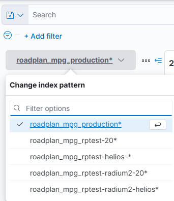

Kazdy komponent systemu Roadplan loguje informacie, ktore su nasledne dostupne v ramci aplikacia Kibana http://192.168.77.41:14003/spaces/space_selector
tam rozlisujeme jednotlive space pre konkretnych zakaznikov a nasledne v kazdom space cez sekciu “Discovery” mozeme prehliadat jednolive logy konkretneho nasadenia
jednotlive logy tam vieme filtrovat podla casu, spravy, typu, atd
Hierarchia logov ma viacero urovni:
Uroven | Nazov | Popis | Kibana filtrovanie |
|---|---|---|---|
1 | Nasadenie instancie Roadplan | Jedna sa o konkretne nasadenia Roadplan pre zakaznika, pricom moze ist o testovacie alebo produkcne prostredie | Rozlisujeme na zaklade “Index patternu” 
|
2 | uroven logu | ci ide o:
| Filter podla parametre “level”, pricom hodnota urovne je cislo:
|
3 | Komponent | CI s jedna o backend, sync komponent, … | Filter podla parametre “COMPONENT_NAME” |
4 | Typ logu komponenty | kazdy komponent moze mat este svoju vlastnu kategorizaciu logov (ci ide napr. o aplikacny log, http log atd.) | Filter podla parametra “type” |
Pre komponent pri nasadeni definujeme aku uroven logu chceme zaznamenavat. Napr. moze ist o situaciu kedy pre urcite nasadenie napr. nechceme mat trace logy, ale tieto napr. chceme pre produkcne prostredie.
Definujeme parametrom: LOGGING_LEVEL, kde vacsinou davame hodnoty:
trace
info
Prehlad jednotlivych komponentov a ake typy (uroven 4 podla tabulky vyssie) logov kazdy komponent obsahuje
Komponent | Typy logov | Poznamka |
|---|---|---|
backend |
|
|
sync-service | nema typy |
|
mpg-flww-sync-service |
|
|
mpg-sync-service | nema typy |
|
mpg-helios-sync-service | nema typy |
|
|
|
|
recovera-flww-sync-service |
|
|
recovera-sync-service | nema typy |
|
|
|
|